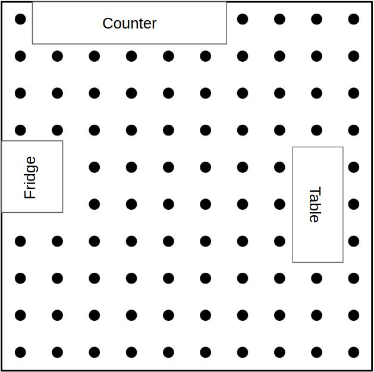

Add or Create Data
Here we describe in detail our data collection process, from image capture to final labeling. However, you may only want to add annotations in our data for a specific instance or two. It is easy to label a new instance in a scene. What do you want to do?
Image Collection
We describe our process in detail in our paper. Essentially we place an imaginary grid over the scene, with a distance of .3 meters between each vertex. At each vertex, we sample every 30 degrees in a full rotation, resulting in 12 RGBD images per vertex. We visit as many vertices as the size of our robot allows.  If we enter a room, we scan the entire room. We try to avoid situations where images show a room that can be entered, but we do not scan it. Sometimes this is unavoidable(not every doorway has a door to close), but we do the best we can.
It is not uncommon for a few collected images to be 'bad'. There may be duplicates if the robot got stuck and did not rotate, etc. These are removed all images renamed so that the largest image name index is equal to the total number of images.
Scene Reconstruction
After the images are collected, we perform a 2-step reconstruction.
Sparse Reconstruction (COLMAP)
We obtain a sparse reconstruction, including camera positions and orientations, using the RGB structure for motion tool COLMAP. We also export undistorted images for the next step, dense reconstruction.
Note: Not all images will be reconstructed by colmap. In practice however, at least two images in each cluster(vertex) are reconstructed. Positions and orientations of the non-reconstructed images can then be interpolated using their image indices.
Dense Reconstruction (CMVS/PMVS)
Since we use the 3D point cloud for labeling, we get a denser cloud using CMVS/PMVS. To get a denser reconstruction we often run CMVS to get small groups of ~200 images, then run PMVS on each of those. We then do the same on groups of ~500 images. We then merge all of these models for a single dense reconstruction.
Note: COLMAP 2.0 now has a dense reconstruction feature. We chose not to use this as our pipleine was already setup using CMVS/PMVS.
Labeling a Single Instance
This section details how to label a single object instance in all images in a scene. There are X steps:
- Segment objects point cloud from dense reconstruction
- Automatically generate bounding boxes by projecting object point cloud into images
- Adjust automatic bounding boxes for tightness and occlusion
- Hand label images that were not reconstructed
Associates
-

Denise M. Silvia This website template has been designed by Free Website Templates for you, for free. You can replace all this text with your own text.You can remove any link to our website from this website template.
-

Nancy R. Bakken You're free to use this website template without linking back to us. If you're having problems editing this website template, then don't hesitate to ask for help on the Forums.